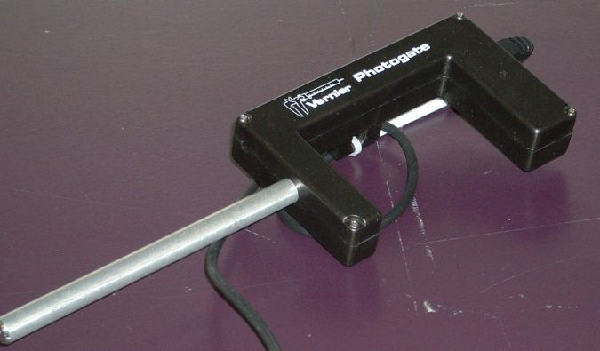
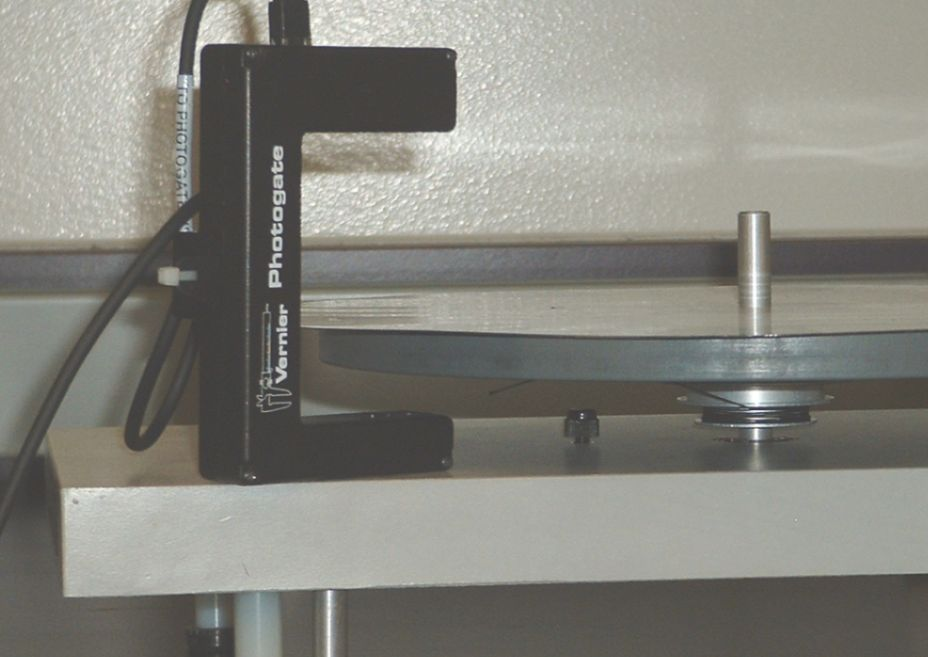
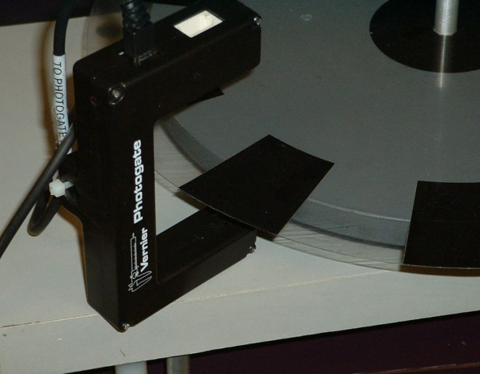
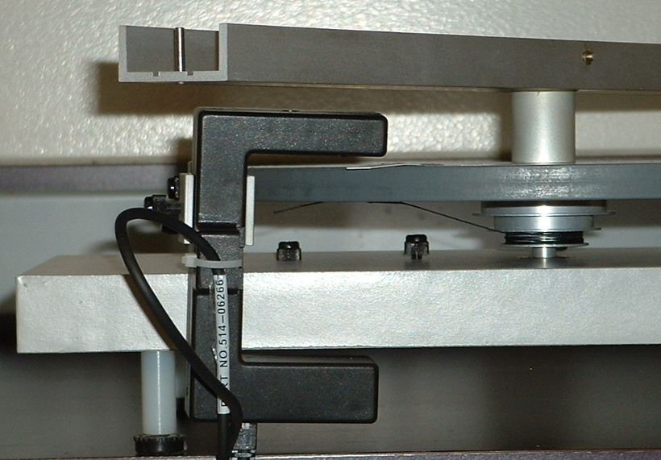
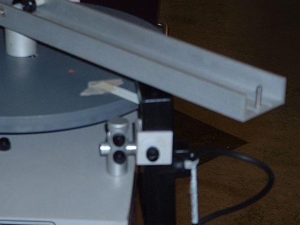

by Dan Peirce
October 9, 2004
The following photo is the new Vernier photogate with a post attachment

The post attachment can be used with the photogate and the table for
the Moment of Inertia Lab.
The post would be cut to a shorter length
See photos below.


For the circuilar motion Lab the post would be removed and the clamps
would be used as shown in the photos below.

